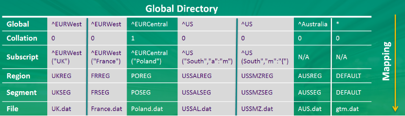

A global directory is analogous to a telephone directory. Just as a telephone directory helps you find the phone number (and the address) given a person's name, a global directory helps GT.M processes find the database file of an M global variable node. But because its life is independent of the databases it maps, a global directory has a second purpose in addition to holding key mappings, which is to hold database characteristics for MUPIP CREATE. While changes to the mappings take effect as soon as a process loads a new global directory, MUPIP CREATE transfers the other characteristics to the database file, but other GT.M processes never use the global directory defined characteristics, they always use those in the database file.
GT.M manages routines in files and libraries separately from globals. For more information on routine management, refer to the Development Cycle chapter in GT.M Programmer's Guide.
A set of M global variables (Names or Name spaces) and / or their subscripts map to Regions that define common sets of properties such as the maximum record length and whether null subscripts collate in conformance to the M standard. Each Region maps to a Segment that defines the properties relating to the file system such as the file name, the initial allocation, and number of global buffers. These properties and mapping rules are stored in a binary file called global directory. By default, a global directory file has an extension of .gld. You can specify any filename and extension of your choice for a global directory as long as it is valid on your operating system; GT.M documentation always uses the default extension.
The location of the global directory is pointed to by the Intrinsic Special Variable $ZGBLDIR. GT.M processes initialize $ZBGLDIR at process startup from the environment variable gtmgbldir and can modify it during execution. For example, with a simple SET $ZGBLDIR command, a process can switch back and forth between development and testing databases.
Consider a global variable ^TMP that holds only temporary data that is no longer meaningful when a system is rebooted. A global directory can map ^TMP to region TEMP that maps to a database file called scratch.dat, with all other globals mapped to gtm.dat. A global directory allows the separation of persistent data (gtm.dat) from non-persistent data(scratch.dat), so that each database file may get appropriately configured for operations—for example, the database administrator may choose to exclude scratch.dat from backup/archival procedures or periodically delete and recreate scratch.dat using MUPIP CREATE.
Consider the following illustration:
There are four M global variables--^Gharial, ^Hoopoe, ^Jacare, and ^Trogon. ^Gharial and ^Jacare map to region REPTILES that maps to database file creep.dat and ^Hoopoe and ^Trogon map to region BIRDS that maps to database file flap.dat. The default namespace * maps to a region called DEFAULT that maps to database file gtm.dat. * denotes all globals other than the explicitly named ^Gharial, ^Hoope, ^Jacare, and ^Trogon. All globals store data in their respective database files. Each database file has a single active journal file. To enforce access restrictions on globals so that herpetologists have access to ^Gharial and ^Jacare and only ornithologists have access to ^Hoopoe and ^Trogon, one just needs to assign appropriate read / write permissions to creep.dat and flap.dat.
| Note | |
|---|---|
Each database file can have a single active journal file. A journal can be linked to its predecessor journal file to form a chain of journal files. |
You can also map different subscripts of the same global to different regions when subscripts have logically separable data. Consider the following global directory example:
^US and ^EURWest have logically separable subscripts that map to different regions. ^EURCentral holds data that has a different collation order than others so it maps to a different region. Such mapping improves operational administration and permits a larger total size. It may also improve performance if the access patterns of the distinct parts allow accesses to all or some of them to use optimizations in the GT.M database engine, for example, to optimize serial accesses.
In a nutshell, the database attributes and mapping rules defined in a global directory allow you to:
Finer-grained Access Control- To block access, or updates, to a portion of the data.
Improve Operational Administration- When a global becomes so big that that breaking it up improves operational administration or permit a larger total size.
Compliment Application Design- To separate global and / or their subscripts in a way that achieves a design goal without writing addition code. For example, mapping globals to regions that are not replicated.
Manage Volatility- some data is static, or relatively so, and you wish to leverage that to tailor your backup and integrity verification patterns, or to use MM access.
Improve Manageability and Performance- When a global variable is overloaded with logically separate data, distributing the logically separate components each to its own database region improves manageability and performance when access patterns use optimization in the GT.M database engine.